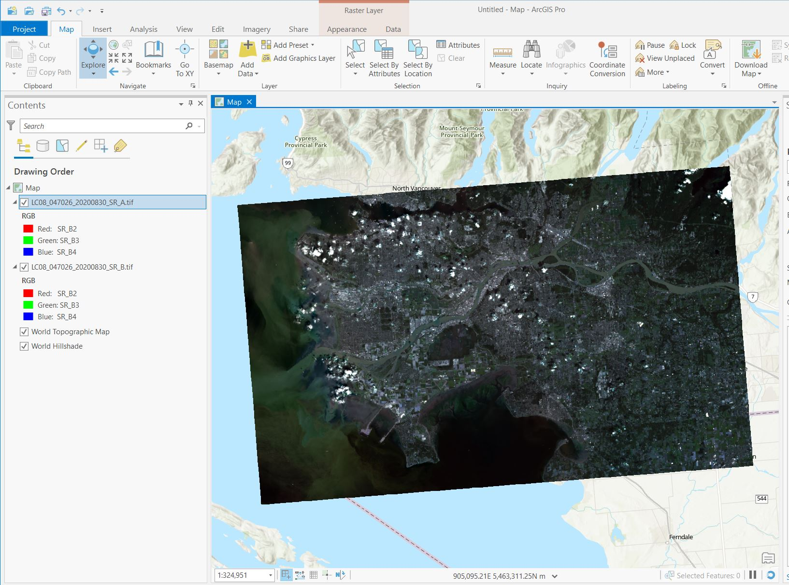
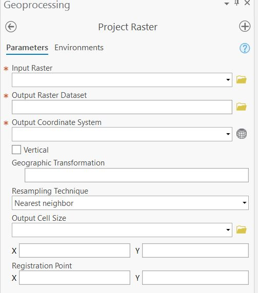
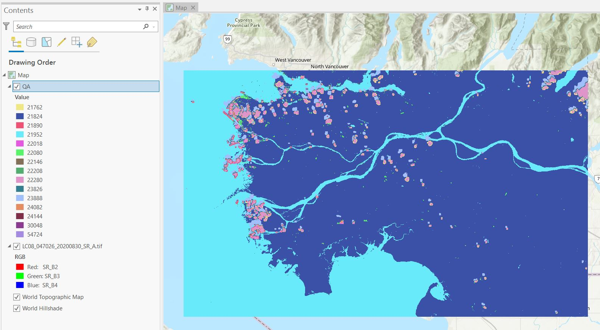
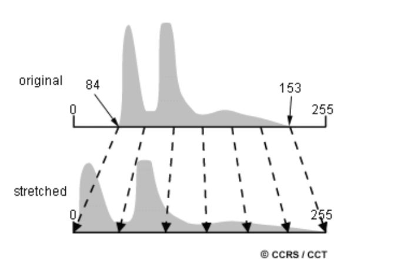
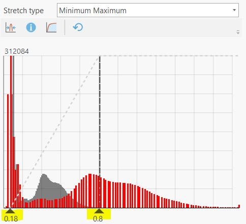

Lab 1 Introduction to Landsat Image Processing
Written by Hana Travers-Smith
Lab Overview
The Landsat satellite program has been active since 1972 and represents one of the most valuable remote sensing datsets in environmental monitoring and ecology. The Landsat series of satellites measure passive reflectance from the Earth’s surface and atmosphere and is used in the fields of agriculture, forestry, geology and hydrology. In 2008, all Landsat data was made open to the public and this has triggered widespread uptake by governments and research groups across the world.
In this lab, you will work with images collected by the Landsat 8 to understand radiometric resolution and get a chance to practice image processing steps including masking clouds and cloud shadows and applying image enhancements.

Learning Objectives
- Understand radiometric resolution and how it relates to Digital Numbers
- Learn how to resample rasters to common projections
- Use the Landsat Quality Assurance Band to mask clouds and shadows
- Understand how image enhancements and focal filters work
Task 1: Data Types & Projections
You are given two Landsat Surface Reflectance images.
- LC08_047026_20200830_02_T1_a.tif
- LC08_047026_20200830_02_T1_b.tif
The filenames use the following naming pattern that tells you information about the data product and when the image was acquired: LXSS_PPPRRR_YYYYMMDD_CC_TX.tif
- L = Landsat
- X = OLI/TIRS Sensor
- S = Landsat 8 satellite
- PPP = WRS path
- RRR = WRS row
- YYYYMMDD = Acquistion year, month, day
- CC = Collection number
- TX = Collection Category
WRS path/row refer to a worldwide grid system, where each Landsat scene is assigned a specific path (longitude) and row (latitude) coordinate.

Use the USGS resource to answer the following questions: ‘https://www.usgs.gov/faqs/what-naming-convention-landsat-collections-level-1-scenes’
Q1. For the Landsat scenes you are given, what Landsat sensor and satellite do the images come from? When were the images acquired and what Landsat Collection number are they found in?
Q2. Data in Landsat Collections 1 & 2 have been pre-processed so that images across time are geometrically and radiometrically consistent. In 2-4 sentences explain what this means and why it is important for detecting environmental changes.
Q3. The following image shows the spectral profile of a vegetated surface before and after atmospheric correction. Describe the differences between the two profiles and explain the properties of the atmosphere that causes this. In your own words, why is it important to correct for atmospheric effects when using satellite imagery collected at different times?


Step 1: Import the following rasters LC08_047026_20200830_SR_A.tif and LC08_047026_20200830_SR_B.tif into a new Map Project in ArcGIS Pro. Name the project Lab 1 and save it in the default documents folder on your computer, typically C:\Users\YourUsername\Documents\ArcGIS\Projects\Lab2.
The bands are as follows:
- SR_B2 = Blue
- SR_B3 = Green
- SR_B4 = Red
- SR_B5 = NIR
- SR_B6 = SWIR1
Experiment with the Symbology tab.
Screenshot 2. Upload a screenshot of Raster A in false color infrared, with NIR in the red channel.
Navigate to > Properties > General and use the image metadata to answer the following questions about the Surface Reflectance rasters.

Q5. Define radiometric resolution and describe how it relates to the range of possible values in the image.
Q6. How many possible values would be present in an 8-bit, 16-bit and 32-bit image? What are the bit-types of rasters A and B (HINT: look at the min/max values of the rasters)?
Zoom in so you can see individual pixels and notice how the different raster projections change how the pixels align. Raster A is in the correct UTM Zone projection, while raster B is not.
Q7: Imagine you want to see how the reflectance of a small forest stand changes over time. Why would it be important that your imagery is displayed in the same projection?
Step 2: Convert raster B to the NAD 1983 UTM Zone 10 projection using the Project Raster tool and save the result as a new raster. (Analysis > Tools > search for Project Raster)

Task 2: Cloud and Shadow Masking
Next, we will use the Quality Assurance (QA) band to mask out pixels covered by clouds and cloud shadows.
Landsat (and many other types of remote sensing imagery) use a Bitmask to store information related to the quality of a pixel. For each pixel, a bitmask is a series of classifications for whether the pixel contains clouds, snow, shadows, haze, and other atmospheric artefacts we want to remove. Bitmasks also contain information on the level of confidence in the pixel classification. All this information is stored in an integer that can be transformed into it’s binary counterpart composed of 0’s and 1’s. Using a bitmask reduces the filesize of a raster, as the integer values are shorter than their binary conunterparts.
The Landsat QA_BAND is a 15-bit integer, meaning that the pixel values can range from 0 to 2^15. There are 15 different indicators stored in this band that relate to pixel quality (clouds, haze etc…). The full list can be found here (expand the bitmask for QA_PIXEL section): https://developers.google.com/earth-engine/datasets/catalog/LANDSAT_LC08_C02_T1_TOA#bands

To interpret the pixel value of a bitmask first convert the integer to binary:
For example: 22280 becomes 101011100001000
Starting from the right, each value is assigned a Bit Position starting at 0 and counting up to the total number of values.
If we want to know if a pixel is cloudy we need to look at bit 3. In this example, bit 3 is represented by the fourth number from the right, and has a value of 1.

According to the bitmask, a value of 1 in bit position 3 indicates a pixel with high confidence cloud.
You will notice that some of the indicators are represented by multiple bit positions. For example, bits 8-9 encode the degree of confidence in the cloud classification.

For our example pixel, bit positions 8-9 contain the values 11, converting this binary number back to integer gives the value 3, which corresponds to High confidence.
Use the following online tool to convert between integer and binary numbers and answer the following question: https://www.rapidtables.com/convert/number/binary-to-decimal.html
Q9. For a pixel with the integer value 23888, what is the classification for Bit 3: Cloud and Bit 4: Cloud Shadow? What about Bit 10-11: Cloud Shadow Confidence?
Step 1: Next, we will create a mask representing pixels we want to keep, then use it to remove cloudy pixels from raster A. First use the Make Raster Layer tool to extract the QA band from the multiband raster.
- Input raster: LC08_047026_20200830_SR_A.tif
- Output raster name: QA_band
- Bands: 6
- leave the other settings as defaults. > Run
Change the Primary Symbology of the new QA_band so that each integer is assigned a unique color. This will help you see what values represent clear pixels. Your output should look something like the following:

Pixels with clear skies are represented by integers 21824 (land) and 21952 (water).
Step 2: We will use the Reclassify (Spatial Analyst) tool to create a new raster where clear sky pixels have a value of 1 and all other pixels have a value of 0.
- Input raster: QA_band
- Reclass field: VALUE
- Output raster: Raster_mask
Click Unique, for pixel values of 21824 and 21952 set the New value to 1 and 0 for everything else.

You should now have a raster that looks like this:

To create our mask we will convert this raster to polygon features. Navigate to Analysis > Tools > Raster to Polygon. - Input Raster: Raster_mask - Field: Value - Output Polygon Features: Polygon_mask - UNCHECK Simplify polygons (this will ensure polygons will align with the raster cells)
Click Run.
For the new polygon mask layer, use the Select by Attributes tool to select the polygons corresponding to clouds using the expression: gridcode = 0, then delete these features in the attribute table. Make sure to save your edits.
Step 3: We are now ready to mask clouds and shadows from the Landsat scene. Navigate to Analysis > Tools > Extract by Mask
- Input raster: LC08_047026_20200830_SR_A.tif
- Input raster or feature mask data: Polygon_mask
- Output raster: masked_scene
Click Run.
Task 3: Image Enhancement and Focal Filters
Step 1: View the NIR band of the cloud masked image in greyscale.
Symbology > change Primary Symbology to Stretch > Set the band to SR_Band4. Notice which land cover types appear bright, and which appear dark.
Q11. What do the light and dark areas of the NIR image represent? How could you use this image to identify vegetation and urban areas?
Image enhancement makes it easier to see differences in light/dark areas of an image and aids in visual interpretation. For example, an 8-bit image can contain brightness values that range from 0-255. However, the range of values on a raw image may be smaller (i.e. 50-200), thus this image will have less contrast between the darkest and lightest regions, and will appear more homogeneous. A common image enhancement is called a linear contrast stretch which remaps the values of an image to cover the full dynamic range. Some image enhancements will first remove the highest and lowest values before stretching to get rid of potential outliers.

Screenshot 5. Upload a screenshot of the histogram of NIR surface reflectance values.
Right-click on the raster layer in the Contents pane > Create Chart > Histogram. Set the variable to the NIR band.
Q12. What is a histogram in the context of a remote sensing image? What do the X and Y axes represent? What is the mean value of the cloud masked NIR image?
Step 2: Next, we will change the image enhancement in the Symbology tab. Click the histogram symbol.

First, change the stretch type to Minimum-Maximum this stretches the image across the full range of values. Next, experiment with moving the sliders along the bottom of the histogram, this will change the minimum and maximum values displayed in the image, and the linear stretch will be applied across this new range. Notice how the image on the map changes.
The grey bars in the background show the original distribution of the values, and the red bars show the stretched values. You can see that applying this transformation increases the range of brightness values across the image.

See the following link for more information about the strech types available in ArcPro: https://pro.arcgis.com/en/pro-app/latest/help/data/imagery/raster-display-ribbon.htm
Q13. Describe how applying a linear stretch changes the appearance of the imagery. What happens as you decrease the maximum value?
Next, we will explore how focal filters work and apply a Sharpening and Smoothing filter. Focal filters change the pixel values in an image by considering the values of the surrounding pixels.
First, a focal window is defined around a target pixel. In a raster image this is usually the 8 adjacent pixels that touch the target pixel (forming a 3x3 grid). The values of the target pixel and pixels in the focal window are used to calculate a new value for the target pixel. In the example below, the focal filter assigns the target pixel (green) the value of the maximum value in the focal window (blue). The window then moves across the image, and every pixel in the image is transformed to a new value.

Another common filter calculates the mean value of the pixels in the window:
Q14. Use the following matrix to calculate the target pixel value (green) using a 3x3 mean filter.

More advanced filters use weighted functions, where the pixels in the window are multiplied by a weighting factor that makes them more or less influential in calculating the target value. Shapening and Smoothing filters use weighted means to enhance or smooth the edges of features in an image. For more information see: https://desktop.arcgis.com/en/arcmap/latest/manage-data/raster-and-images/convolution-function.htm
Step 3: Apply a 3x3 Sharpening and Smoothing filter to the cloud masked image using the Convolution Tool in the Raster Functions menu.